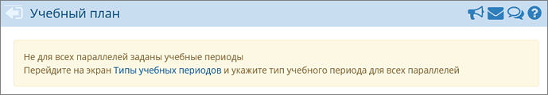
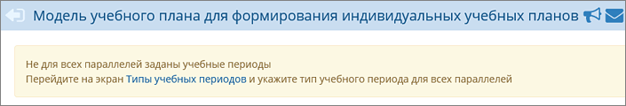
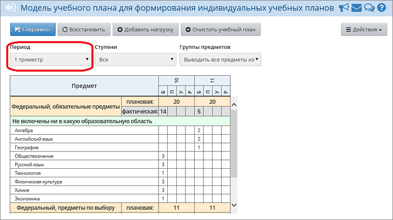
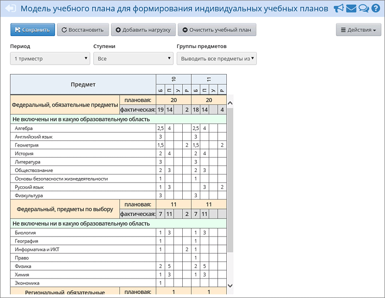

Если эти сообщения появились, значит, ещё не все типы учебных периодов заданы. Снова проверьте типы учебных периодов. Проверив расстановку переключателей, нажмите кнопку Сохранить и снова вернитесь в экран «Индивидуальный учебный план».
Если с периодами все в порядке, можете приступать к формированию «Индивидуального учебного плана». В первую очередь выберите учебный период:

В таблице ИУП будут выведены только те параллели, для которых есть ИУП-классы, работающие по выбранному типу периода. Если какая-то параллель, имеющая такой учебный период, не отображается в таблице, возможно, для неё задан другой тип учебного периода, или не создан класс с типом «Индивидуальный» или не задана предельная нагрузка.
Теперь нужно заполнить таблицу модели ИУП в соответствии с той таблицей, которая используется в вашей ОО в бумажном виде.
Обратите внимание:
| 1. | Рекомендуется заполнить модель ИУП за первый учебный период целиком, только после этого копировать её в следующие учебные периоды. (Если же сразу заполнять модель ИУП за все периоды, то придётся вводить всю информацию вручную.) Подробнее о копировании ИУП...
|
| 2. | В модели ИУП имеет значение уровень освоения. Для каждого предмета можно использовать один или несколько уровней:
|
| · | Б – базовый,
|
| · | П – профильный,
|
| · | У – углубленный,
|
| · | Р – расширенный.
|
| При сохранении модели ИУП система «СГО» автоматически создаст предметы на основании этой модели ИУП, с указанием уровня освоения для предмета.
|
Модель ИУП включает предметы различного типа: обязательные предметы (из федерального и регионального компонентов), предметы по выбору (из федерального и регионального компонентов), элективные курсы и т.д. Если компонент не доступен в таблице ИУП, значит, для него не задана предельная нагрузка на экране «Нагрузка».
После заполнения модель ИУП за 1-й триместр может выглядеть следующим образом:
